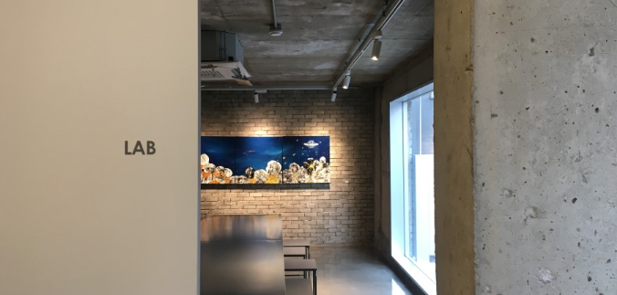

아침 9시부터 저녁 6시.
하지만 저녁먹고 또 다시 들어와서 야근하는 일상.
이런 일상들에서 그나마 느낄 수 있는 소확행은 무엇이 있을까.
일상에 지친 DB반 아이들에게 물어본 각자의 소확행 이야기 지금부터 시작합니다.
.
.
.
.
.
많은 친구들이 집에서 편히 쉬는게 소확행이라고 말했다.
동욱 - 불끄고 누워서 핸드폰할 떄
동찬 - 퇴근하고 집에가서 아무것도 안하고 널부러져 있을 때
재호 - 주말에 눈을 떴는데 약속 없고 집에만 있을 수 있을 때
성환 - 병결내고 쉴 때
다른 친구들도 자기들만의 귀여운 소확행이 있었다.
유경 - 서점가서 책사고, 영화보고, 전시회가고, 인테리어샾가기
수림 - 편의점 털러가기, N드라이브로 추억여행하기, 핫트랙스 구경하기
세화 - 다이소가서 소비하기
태규 - 친한 사람들과 맛있는 안주로 함께 하는 시간
도영 - 좋아하는 노래 들으면서 집에 도착해갈 때
현호 - 주말에 늦잠자기
규복 - 밤에 단거 먹을 때
찬익 - 술.술.술!!!

게임을 본인들의 소확행이라고 망설임없이 대답하는 친구들도 있었다.
동원 - 할거 없어서 바로 퇴근하고 쓰리팝갈 때
대훈 - 게임할 때

나의 소확행은 좋아하는 사람들이랑 좋아하는 곳에서 함께 시간을 보내는 것이다.
그리고 우연히 좋아하는 노래를 들으면 기분이 그렇게 세상 좋을 수 없다.